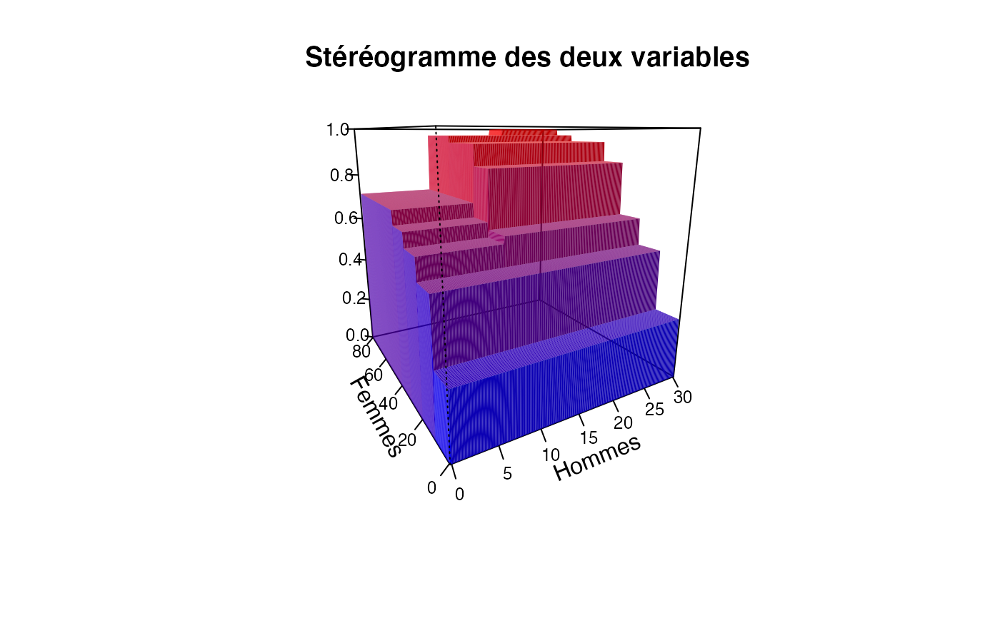
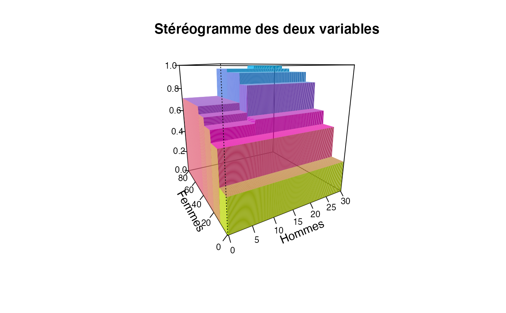
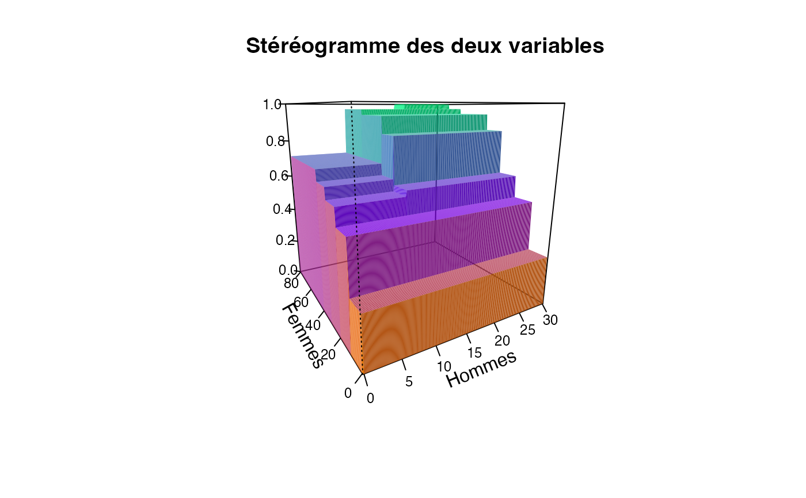
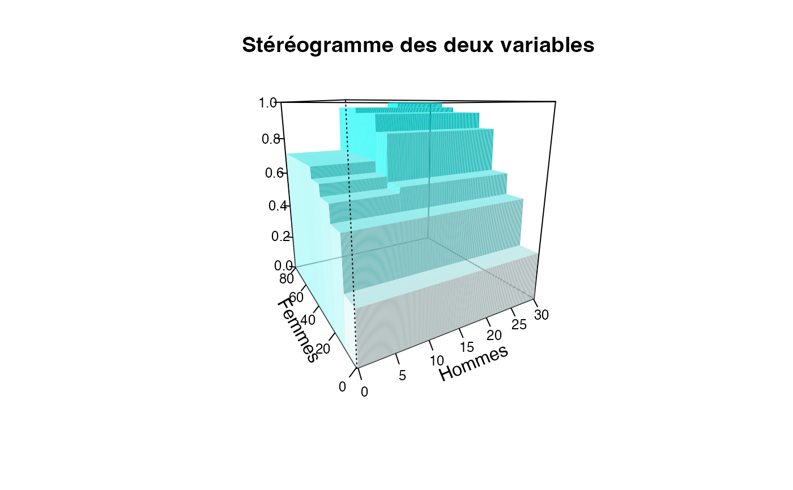
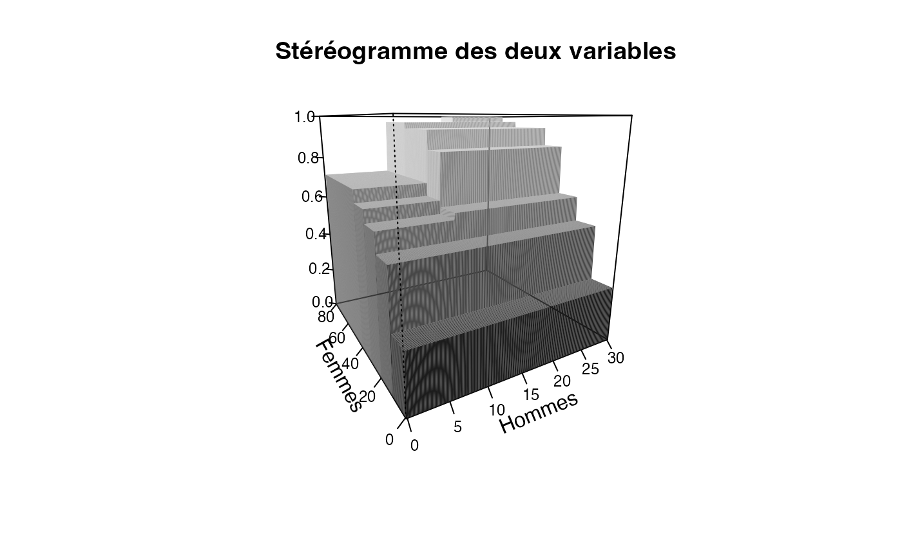
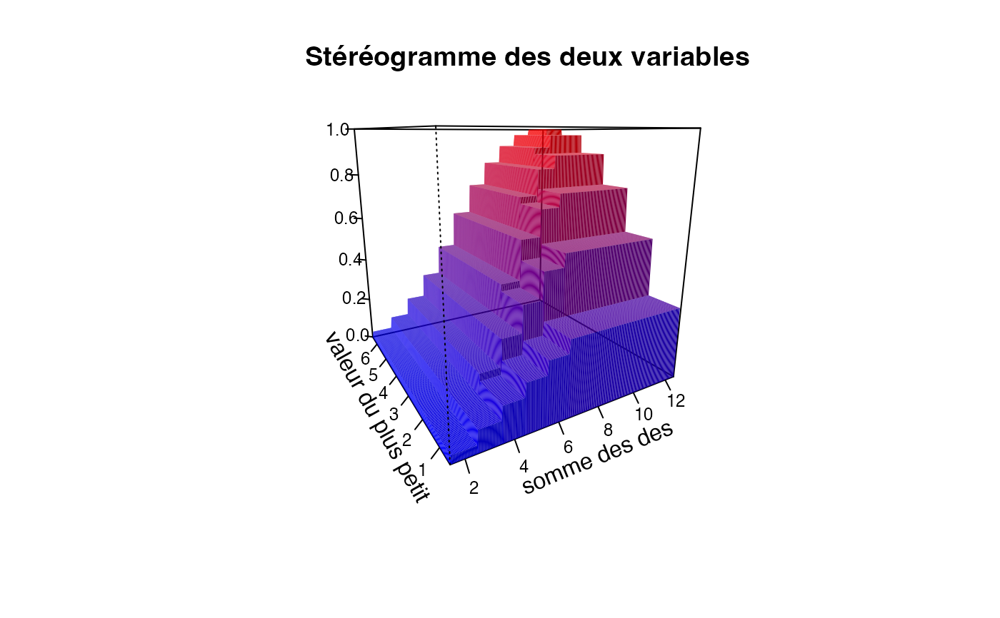

Cette fonction construit un stéréogramme permettant de juger de l'association entre deux variables discrètes ou groupées en classes.
plotcdf3( x, y, f, xaxe, yaxe, col = NULL, border = FALSE, Nxy = 200, theme = "0" )
| x | Valeurs observées ou modalités de la première variable discrète |
|---|---|
| y | Valeurs observées ou modalités de la seconde variable discrète |
| f | Si f=0 (donc length(f)=0), x et y sont deux séries statistiques. Si length(f)>1, f est un tableau de fréquences et x et y les noms des lignes et des colonnes de f. |
| xaxe | Nom de l'axe des abscisses |
| yaxe | Nom de l'axe des ordonnées |
| col | Couleur du stéréogramme |
| border | Le maillage du graphique doit-il être affiché ? |
| Nxy | Pas du maillage pour chaque axe |
| theme | Le thème détermine la palette de couleurs utilisées. Il y a quatre choix possibles en couleurs "0", "1", "2", "3" et un en nuances de gris "bw" |
Un stéréogramme des deux séries statistiques groupées ou des deux séries statistiques discrètes étudiées.
F. Bertrand, Ch. Derquenne, G. Dufrénot, F. Jawadi and M. Maumy, C. Borsenberger editor, Statistiques pour l’économie et la gestion, De Boeck Supérieur, 2021.
Other plot functions:
dotchart3()
Frederic Bertrand, frederic.bertrand@utt.fr
ff=table(cut(Europe$Partiel_H,c(0,10,20,30)), cut(Europe$Partiel_F,c(0,10,20,30,40,50,60,70,80)))/ sum(table(cut(Europe$Partiel_H,c(0,10,20,30)), cut(Europe$Partiel_F,c(0,10,20,30,40,50,60,70,80)))) plotcdf3(c(0,10,20,30),c(0,10,20,30,40,50,60,70,80), f=ff,xaxe="Hommes",yaxe="Femmes",theme="0")plotcdf3(c(0,10,20,30),c(0,10,20,30,40,50,60,70,80), f=ff,xaxe="Hommes",yaxe="Femmes",theme="cyan",border=TRUE)xx=seq(1.5,12.5) yy=seq(0.5,6.5) p=c(1/36,0,0,0,0,0, 2/36,0,0,0,0,0, 2/36,1/36,0,0,0,0, 2/36,2/36,0,0,0,0, 2/36,2/36,1/36,0,0,0, 2/36,2/36,2/36,0,0,0, 0,2/36,2/36,1/36,0,0, 0,0,2/36,2/36,0,0, 0,0,0,2/36,1/36,0, 0,0,0,0,2/36,0, 0,0,0,0,0,1/36) p=matrix(p,byrow=TRUE,ncol=6) plotcdf3(xx,yy,p,"somme des des","valeur du plus petit")